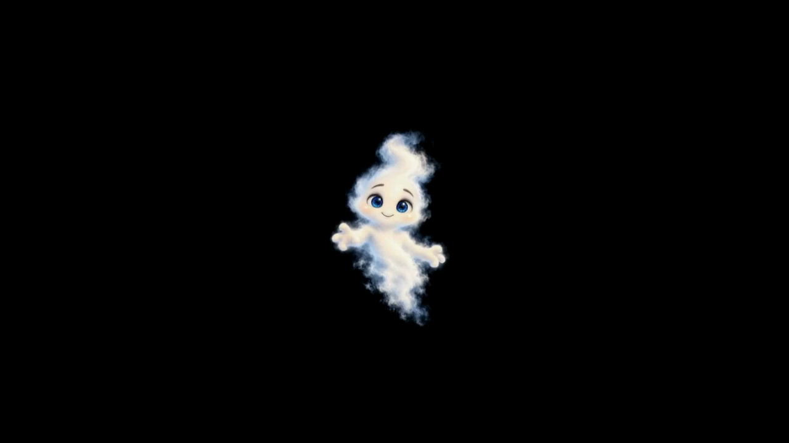

A little haunting in the yard.Wisp, watching eyes, and soft painted vapor.
Friendly stays friendly.
Painted footage rehearsal. Wave and loop joins are still under review.
Open the picture in a separate window, then move it to your projector and choose Full screen.
Open after-dark screensaver loops
Only this laptop plays sound. Paired phones and projector output stay silent.
Private footage rehearsal: both idle loops and the new wave joins still need visual acceptance.
Auto chooses the moments. Every change waits for the movement already playing.
This rehearsal uses the wave, painted morphs and both idles. No big jump scares.
Tap moments in the order you want. Wisp settles between them; form changes include their transformation.
No moments yet. Auto can also choose for you.
Saved on this device. Locked modes skip actions for the other character. Maximum 24 moments.
Glide the whole apparition through the yard. The painted body keeps acting, and the selected character stays locked.
Choose Wisp’s character voices
Compare the short auditions, then choose a connected voice for typed lines.
Checking character voice…
AI character voice, spoken exactly as typed. The painted film keeps moving. This is voiceover with lettering; these films do not have live lip sync. Lines are sent to the connected voice service and are not saved in this browser.
Start the show to speak.
Place the ghost and the watching eyes separately. Changes reach the projector immediately. Keep the entire smoky outline inside your surface.
Drag the numbered corners to fit the surface, or focus a corner and use arrow keys. Guides appear only here.
Wisp keeps his original filmed fog. This adds a subtle wake; set it to zero for the original film alone. Eyes use a silent native motion passage and deliberately vanish between looks. Friendly mode hides them.
Percent across/down, clockwise from the top left. Crossed or collapsed corners are rejected. Adjust while viewing your projector.
Placement saves on this laptop. Phone pairing is still separate work.